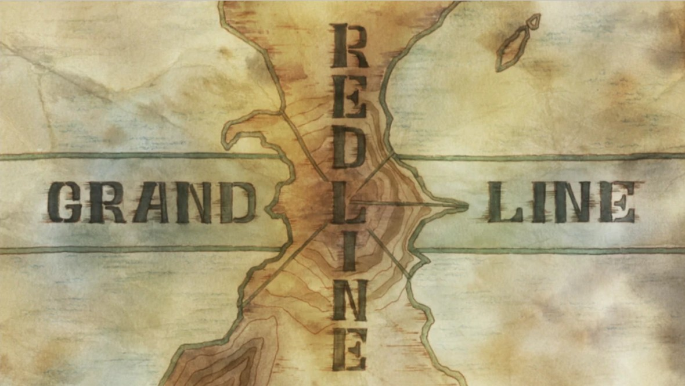

One Piece
Los mares y el mundo de One Piece
El mundo de One Piece esta dividido por enormes oceanos y lineas gigantescas que separan el planeta. Esa geografia no es solo decoracion: determina las rutas, el poder politico, la dificultad de la navegacion y la escala real del viaje de Luffy.
Volver a One PieceMapa general
Como se organiza el planeta
One Piece divide su mundo entre los cuatro Blues, la Grand Line, la Red Line y las Calm Belt. Cada zona tiene reglas distintas y juntas crean un planeta dificil de recorrer incluso para piratas veteranos.
La Grand Line concentra casi toda la aventura principal porque ahi estan los climas imposibles, las islas mas extranas, los monstruos marinos gigantes y los grandes nombres del mundo pirata. Por encima de todo eso, la Red Line actua como una muralla continental que corta el planeta y sostiene puntos de poder como Mariejois.
- Los cuatro Blues son los mares base del mundo antes de entrar a la gran ruta.
- La Red Line separa fisicamente los mares y condiciona toda la navegacion.
- La Grand Line es la ruta mas famosa, peligrosa e importante de la historia.
- El Nuevo Mundo representa la fase mas dura y caotica del viaje.
Los 4 mares principales
Mar principal
East Blue
Es el mar mas tranquilo y el lugar donde empieza la historia de Monkey D. Luffy. Dentro del mundo de One Piece suele considerarse el mar mas debil, pero precisamente por eso sirve como punto de partida perfecto para presentar a la tripulacion y el sueno de convertirse en Rey de los Piratas.
De que va: lugar de origen de muchos protagonistas, primer escenario de la serie y hogar de varios de los arcos iniciales.
Personajes importantes: Luffy, Roronoa Zoro, Nami, Usopp y Sanji.
Mar principal
West Blue
West Blue es un mar asociado a mafias, criminales y un aire cultural mas refinado y elegante que otros lugares del mundo. Aunque no tiene el mismo foco que East Blue, su reputacion dentro del inframundo le da bastante personalidad.
De que va: origen de Nico Robin, fuerte presencia del inframundo y fama ligada a cocineros y organizaciones mafiosas.
Mar principal
North Blue
North Blue es uno de los mares mas peligrosos y violentos del mundo. Tiene fama de zona dura, marcada por guerras, tecnologia militar y una atmosfera mucho menos amable que la del East Blue.
De que va: mar de conflictos, origen de Trafalgar D. Water Law y de Sanji, y lugar donde existe la influencia del ejercito Germa 66.
Mar principal
South Blue
Es uno de los mares menos explorados de la serie, pero su reputacion apunta a criaturas extranas, climas exoticos y una identidad propia menos mostrada que la de los otros Blues.
De que va: mar menos desarrollado en pantalla y origen de Portgas D. Ace.
Grandes lineas y zonas especiales
Linea del mundo
Red Line
La Red Line es una gigantesca linea continental que atraviesa todo el planeta. Es una barrera natural descomunal que separa los cuatro mares y condiciona por completo las rutas maritimas.
De que va: divide los 4 mares, sostiene a Mariejois en su parte mas simbolica y solo puede cruzarse por puntos muy concretos.
Ruta principal
Grand Line
Es el oceano mas peligroso y famoso del mundo, y el lugar donde se desarrolla casi toda la aventura principal de One Piece. Ahi los climas son imposibles, las agujas magneticas mandan sobre la navegacion y cada isla parece pertenecer a un mundo diferente.
De que va: climas extremos, monstruos marinos gigantes, islas unicas y presencia de los grandes piratas, marines y poderes politicos.
Zona de riesgo
Calm Belt
Las Calm Belt son franjas de mar quietas alrededor de la Grand Line. No hay viento ni corrientes, lo que ya vuelve dificil navegar, pero su peligro real esta en los Sea Kings gigantes que dominan esas aguas.
De que va: navegacion casi imposible para barcos normales; la Marina puede cruzarla usando barcos preparados con kairouseki.
Paradise y New World
El Grand Line se divide en dos mitades muy diferentes. La primera se siente mas cercana a la aventura clasica, mientras que la segunda representa la escalada total de poder y caos del mundo.
Primera mitad
Paradise
Paradise es la primera mitad del Grand Line. Aqui el viaje mantiene un tono de exploracion y descubrimiento mas clasico, aunque los enemigos siguen siendo peligrosos y muy superiores a la mayoria de piratas comunes.
De que va: aventuras mas clasicas, exploracion, descubrimiento y rivales fuertes pero todavia manejables comparados con la segunda mitad.
Segunda mitad
New World
El Nuevo Mundo es la segunda mitad del Grand Line y el territorio donde dominan los Yonkou. Es muchisimo mas peligroso, exige haki avanzado y convierte cada conflicto en una guerra de gran escala.
De que va: dominio de emperadores, enormes guerras, alianzas inestables y la parte mas seria, dura y caotica de todo el mundo de One Piece.
Lugares mas importantes del mundo
- Laugh Tale. Isla final donde se encuentra el One Piece y destino ultimo de la gran aventura.
- Marineford. Cuartel principal de la Marina y simbolo del poder militar del Gobierno Mundial.
- Enies Lobby. Isla judicial vinculada a la autoridad del Gobierno Mundial.
- Impel Down. Prision submarina de altisima seguridad.
- Wano Country. Pais samurai aislado del resto del mundo.
- Egghead. Isla futurista relacionada con Vegapunk y la ciencia mas avanzada.
- Elbaf. Tierra de gigantes y una de las regiones mas esperadas de la historia.